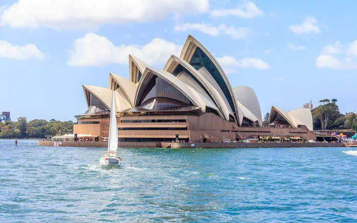
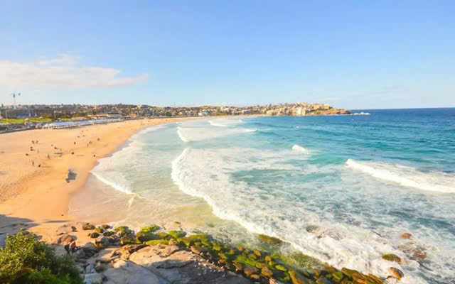
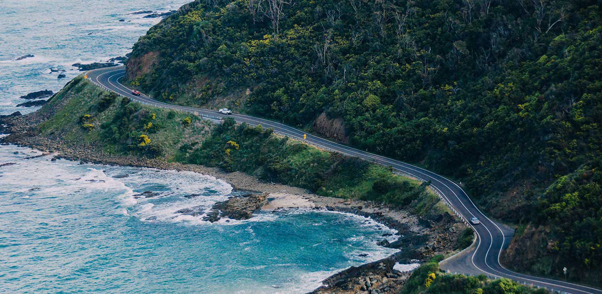
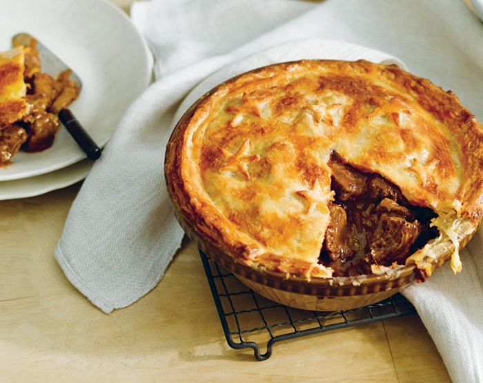
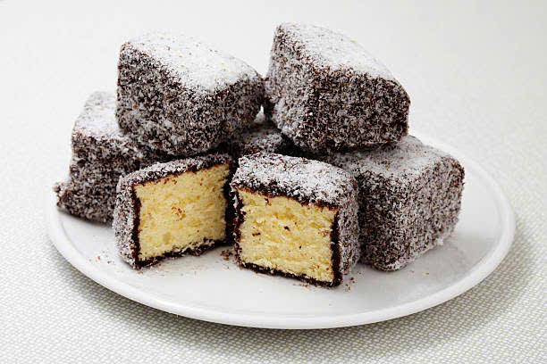

Thông Tin Tour
Giá: 65,000,000 VND
Ngày đi: 10/02/2025
Phương tiện: Máy bay lượt đi + khứ hồi và xe du lịch tại Nhật Bản.
Thời gian: 7 ngày 6 đêm
Giới thiệu: Tour tham quan Sydney, nhà hát Opera House, cầu cảng Harbour Bridge, Melbourne, và vườn thú Taronga cùng với những món ăn tại nơi tham quan.
Lịch Trình Tour
- Ngày 1 - 2: Nhà hát Opera House biểu tượng kiến trúc hiện đại của Sydney, tham quan và chụp ảnh. Cầu cảng Harbour Bridge nơi tản bộ hoặc leo cầu để ngắm toàn cảnh thành phố và vịnh Sydney. Bãi biển Bondi Thư giãn tại bãi biển nổi tiếng với làn nước xanh trong.
- Ngày 3 - 4: Great Ocean Road Tuyến đường ven biển đẹp nhất thế giới, ngắm nhìn những cột đá Twelve Apostles hùng vĩ. Chợ Queen Victoria Thỏa sức mua sắm và thưởng thức các món ăn địa phương. Khu phố nghệ thuật Fitzroy nơi tản bộ khám phá các con đường với graffiti độc đáo và quán cà phê nổi tiếng.
- Ngày 5: Gặp gỡ các loài động vật biểu tượng của Úc như chuột túi (kangaroo), gấu túi (koala), và đà điểu (emu). Tìm hiểu về hệ sinh thái độc đáo của châu lục này.
- Ngày 6 - 7: Mua sắm quà lưu niệm và tự do khám phá Sydney trước khi trở về Việt Nam.
Điểm Tham Quan Nổi Bật
-  Nhà hát Opera House
-  Bãi biển Bondi
-  Great Ocean Road
Ẩm Thực Đặc Sắc
Tour sẽ giới thiệu đến du khách các món ăn nổi tiếng của Úc:
-  Bánh pie Úc.
-  Lamington Cake truyền thống.
Phương Tiện Di Chuyển
- Máy bay lượt đi + khứ hồi, xe du lịch tại Úc.